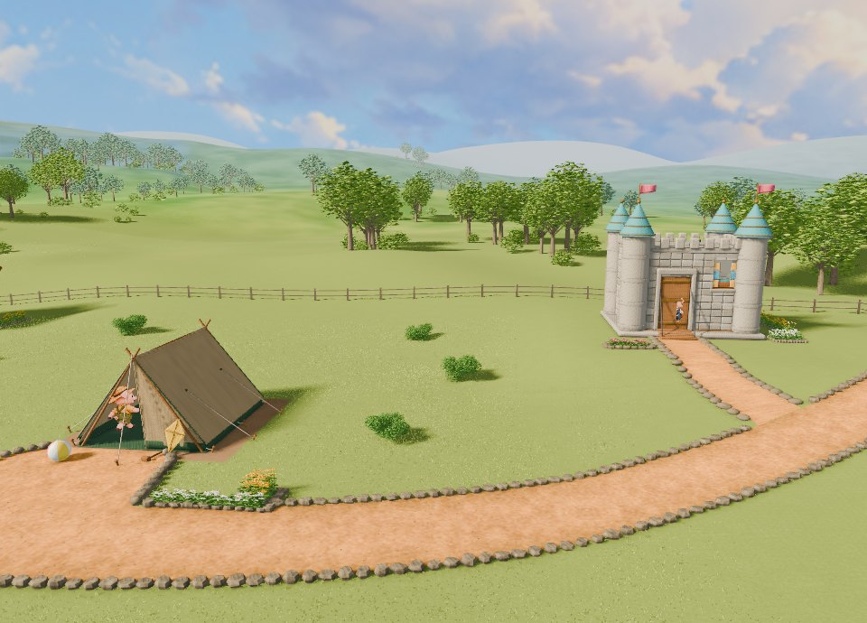

ビッグファイブ診断と連動
性格を決めると、
性格を決めると、
お話が変わる。
登場人物ひとりひとりに、5つの性格（開放性・誠実性・外向性・協調性・感受性）を与えてください。どんな家を建てるか、だれを助けるか、どう攻めるか。性格しだいで、お話はまったく違う結末へ進みます。
目標は、原作どおりの「ストーリー完成度100%」になる性格を導き出すこと。でも、遠回りした先には、原作にない物語が待っています。

遊び方
1. 性格を決める登場人物それぞれの5つの性格を「低い・ふつう・高い」で選びます。ビッグファイブ診断の結果をそのまま使うこともできます。
2. お話を見る3Dの絵本劇が、その性格どおりに動きます。家の形も、台詞も、歩き方も変わります。
3. 結末を集める最後に「ストーリー完成度」が出ます。100%をめざすもよし、めずらしい結末を探すもよし。